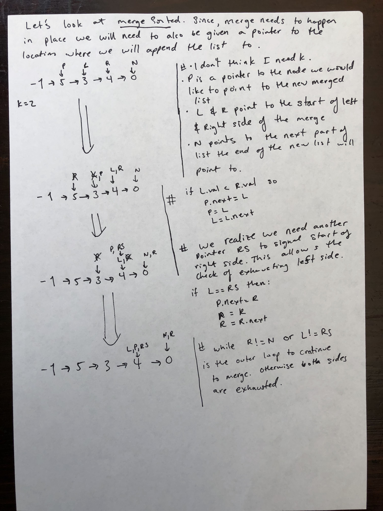

Week 1 - Linked Lists
This week we will be covering the fundamentals of linked lists and common ways they appear in interviews.
Goals
- Easily build a linked list
- Understand most common variants
- Feel comfortable with recursion
- Two pointer technique
- Dummy head technique
- Comfort with pointer bookkeeping
- Framework for approaching Linked List problems
Before our weekly session
Due before Monday, June 3rd at 11:59pm PDT
Check out the warmups session tab to review the required tasks before our weekly session. This will include reviewing basic concepts related to this week's topic and doing a few easy/medium coding problems. Plan to spend between 1 and 5 hours on these exercises. if you haven’t tried Pramp yet, now might be a great time to test our your skills in a mock interview. If you sign up with http://pramp.com/promo/codepath, you’ll get unlimited interviews (I think it’s normally limited to 3). If you already have an account, you might need to create a new account to get the unlimited interviews. The interviewers can be hit or miss, but even with a less experienced interviewer, it’s great practice for your technical communication, and to see if you can quickly apply the UMPIRE method in a timed setting.
After the session
Due before Monday, June 10th at 11:59pm PDT
Check out the assignment tab to review the required tasks after attending our weekly session. There will be some post-session questions that you can work on throughout the week to help solidify your understanding. Some problems may be optional, but it is highly recommended that you do all of them. Working on these questions will help you succeed in the final HackerRank assessment for this unit. The HackerRank assessment will be a mix of multiple choice and coding challenges. Plan to spend 90 minutes on this assessment.
Assigment Summary
The following is the summary of your assignment for this unit:
- GreatOverall Rank
- #138 / 165Rank Number
- 66 / 100Total Score
- 446Feature Score
- 5 / 5UI Score
- 5 / 5Code Score
Cohort Projects Summary
The following is a breakdown of projects for the overall cohort:
| Score Rank | Total Projects | Percent Achieved |
|---|---|---|
| Excellent | 118 | 72% |
| Great | 28 | 88% |
| Good | 19 | 100% |

Pre-Session Tasks
Due before Monday, June 3rd at 11:59pm PDT
Review
Warmup Problems
Required (45-90 minutes)
- Delete Node in Linked List
- Reverse Linked List
- Linked List Cycle
- Add two numbers (LSF)
- Odd Even Linked Lists
If you get stuck, please consult the Hints page.
Assigment Summary
The following is the summary of your assignment for this unit:
- GreatOverall Rank
- #138 / 165Rank Number
- 66 / 100Total Score
- 446Feature Score
- 5 / 5UI Score
- 5 / 5Code Score
Cohort Projects Summary
The following is a breakdown of projects for the overall cohort:
| Score Rank | Total Projects | Percent Achieved |
|---|---|---|
| Excellent | 118 | 72% |
| Great | 28 | 88% |
| Good | 19 | 100% |
Linked Lists - Session 1
Schedule
- Course Intro (15 minutes)
- Lecture (40 minutes)
- Quick Questions (40 minutes)
- Wrap Up
Lecture
Slides
Quick prototyping challenges
In this segment of the class you will be working in groups of 2-3. As a group, you will have 30 minutes to go through 5 different problems. The goal for each problem is not to write any code, but instead to think through the problem and come up with a plan on how to solve it. For easy problems, aim to spend 5 minutes. For medium and hard problems, try to limit the time to 10 minutes.
For example, suppose we were given the following question – Reorder List.
Given a singly linked list
L: L0→L1→…→Ln-1→Ln, reorder it to:L0→Ln→L1→Ln-1→L2→Ln-2→…You may not modify the values in the list's nodes, only nodes itself may be changed.
We would like you to write down the plan or prototype phase of UMPIRE and take a picture:
For each of the following five questions, one person should take the lead on the discussion, with the other group members chiming in with suggestions and/or feedback.
Quick Questions
-
Given a singly linked list, determine if it is a palindrome. Could you do it in O(n) time and O(1) space?
-
Remove all elements from a linked list of integers that have value
val.Example:
Given: 1 --> 2 --> 6 --> 3 --> 4 --> 5 --> 6, val = 6 Return: 1 --> 2 --> 3 --> 4 --> 5 -
Given a singly linked list, group all odd nodes together followed by the even nodes. Please note here we are talking about the node number and not the value in the nodes.
Example:
Given 1->2->3->4->5 return 1->3->5->2->4 -
Given a non-negative integer represented as a singly linked list of digits, add one to the integer. You may assume the integer do not contain any leading zero, except the number 0 itself. The digits are stored such that the most significant digit is at the head of the list.
Example:
Given 1->2->3 return 1->2->4 -
Given a linked list, remove the n-th node from the end of list and return its head. Note that the given n will always be valid.
Example:
Given 1->2->3->4->5, and n = 2. Return 1->2->3->5
Assigment Summary
The following is the summary of your assignment for this unit:
- GreatOverall Rank
- #138 / 165Rank Number
- 66 / 100Total Score
- 446Feature Score
- 5 / 5UI Score
- 5 / 5Code Score
Cohort Projects Summary
The following is a breakdown of projects for the overall cohort:
| Score Rank | Total Projects | Percent Achieved |
|---|---|---|
| Excellent | 118 | 72% |
| Great | 28 | 88% |
| Good | 19 | 100% |
Linked Lists - Session 2
Schedule
- Lecture (30 minutes)
- UMPIRE Practice (40 minutes)
- Mock Interviews (40 minutes)
- Wrap Up
Lecture
Slides
Mock Interview
This segment of the class will be a practice interviewing session where everyone will be paired up with a partner. You should spend 20 minutes on one problem before switching roles with your partner and moving on to their question.
First, introduce yourself to your partner. Then, one person should start off as the interviewer, and share the collabedit link they created before the session, where the two of you will collaborate.
This guide gives an insight on how to:
- Conduct a productive mock interview (when playing the role of the interviewer)
- Be a proactive interviewee
Mock Interview Questions
UMPIRE
In this interactive session we will focus on working through the full UMPIRE following the example in the UMPIRE guide.
We will complete the questions below using the UMPIRE format.
For each question, complete the following outline:
1. Understand
- Choose a “happy path” use case, different than the one provided, and a few edge cases
- Ask clarifying questions and use examples to understand what the interviewer wants out of this problem
2. Match
- See if this problem matches a problem category (ex. linked lists, dynamic programming) and strategies or patterns within the category
3. Plan
- Sketch visualizations and write pseudocode
- Walk through a high level implementation with an existing diagram
4. Implement
- Implement the solution (make sure to know what level of detail the interviewer wants)
5. Review
- Re-check that your algorithm solves the problem by running through important examples
- Go through it as if you are debugging it, assuming there is a bug
6. Evaluate
- Finish by giving space and run-time complexity
- Discus any pros and cons of the solution
Here is an example of what should be "turned in". Given the question Sort List.
Sort a linked list in O(n log n) time using constant space complexity.
We suggest using an erasable surface or pencil and paper for this. Also, it is ok that the Review phase can just be the output of your "watched" variables. You normally will do the review on top of the code itself while in the interview, but to turn in an outline of the UMPIRE method we will just keep the review portion separate. Your outline may look like the following: 
Assigment Summary
The following is the summary of your assignment for this unit:
- GreatOverall Rank
- #138 / 165Rank Number
- 66 / 100Total Score
- 446Feature Score
- 5 / 5UI Score
- 5 / 5Code Score
Cohort Projects Summary
The following is a breakdown of projects for the overall cohort:
| Score Rank | Total Projects | Percent Achieved |
|---|---|---|
| Excellent | 118 | 72% |
| Great | 28 | 88% |
| Good | 19 | 100% |
Assignment 1
Due before Monday, June 10th at 11:59pm PDT
HackerRank (required)
The assignment for the week is to complete a HackerRank assessment. The assessment will contain a mix of multiple choice questions and coding problems and should take around 90 minutes. Learn more about the HackerRank assessments in our FAQ which answers common student questions.
Post-session practice problems (not required)
- Merge Two Sorted Lists
- Intersection of two linked lists
- Add two numbers (MSF)
- Copy list with random pointer with O(1) extra space beyond the copied list
- Linked List Cycle II
- Remove Duplicates II
- Reorder list
- Merge k sorted lists
If you get stuck on the practice problems, please consult the hints page.
Assigment Summary
The following is the summary of your assignment for this unit:
- GreatOverall Rank
- #138 / 165Rank Number
- 66 / 100Total Score
- 446Feature Score
- 5 / 5UI Score
- 5 / 5Code Score
Cohort Projects Summary
The following is a breakdown of projects for the overall cohort:
| Score Rank | Total Projects | Percent Achieved |
|---|---|---|
| Excellent | 118 | 72% |
| Great | 28 | 88% |
| Good | 19 | 100% |
Assigment Summary
The following is the summary of your assignment for this unit:
- GreatOverall Rank
- #138 / 165Rank Number
- 66 / 100Total Score
- 446Feature Score
- 5 / 5UI Score
- 5 / 5Code Score
Cohort Projects Summary
The following is a breakdown of projects for the overall cohort:
| Score Rank | Total Projects | Percent Achieved |
|---|---|---|
| Excellent | 118 | 72% |
| Great | 28 | 88% |
| Good | 19 | 100% |